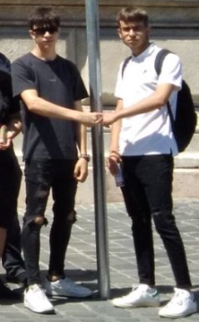
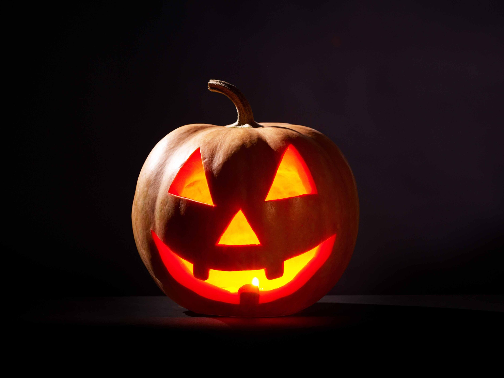
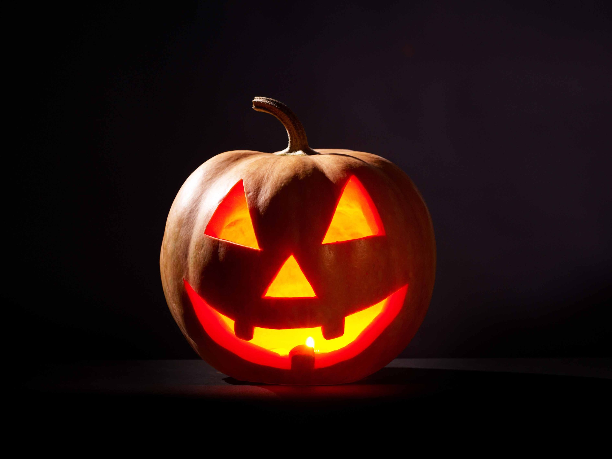

Csibészek_Ősz
Ősz:

- Csodálatos a természet kora ősszel! Reggelente gyönyörködhetünk a hajnali párák látványában.
- Az őszi ruhatár a legvariábilisabb. Már nem izzadunk bele a ruhába, még nem fázunk szoknyában.
- Sok termés ősszel érik be, szeptember elején kezdődik a szüret,eltarthat egészen októberig.
- Kezdődik a bevackolós időszak, az otthonunkban töltődhetünk. Jöhetnek a könyvek, magazinok,
filmek, zenék, nagy sütés-főzések, családi, baráti összejövetelek, hétvégi szieszták, lakásszépítés, dekorálás, bármi, ami kikapcsol, lazít, örömet ad.
- Valószínűleg ősszel és télen készül a legtöbb házi süti. Kísérletezhetünk új ételekkel egy-egy ráérősebb napon.
- Lassan, de biztosan közelednek a téli ünnepek – jó esetben pusztán ennek a gondolatától jobb lesz a hangulatunk.



Halloween:
- Mivel Ősszel van a halloween szerintem érdemes ezt is megemlíteni.
- Hitük szerint ugyanis ezen a napon tért vissza a földre azoknak a bűnösöknek a lelke,
akik az elmúlt esztendőkben haltak meg, és azóta állatok testében "léteztek".
- Megfelelő áldozatok bemutatásával ezen a napon engesztelést lehetett szerezni az elhunytaknak, hogy ezáltal átkelhessenek a mennyországba.
- Kétségtelenül a legismertebb jelképe halloweennek a faragott töklámpás.
- A legtöbb országban ismerik a halloween ünnepét. Éjjel rémisztő jelmezekbe bújnak, kísértet
történeteket mesélnek, mulatnak és természetesen töklámpásokat faragnak.
- Egy máig fennmaradt hiedelem szerint október utolsó napján a legvékonyabb a választóvonal az élők és a holtak világa között.
 


Mesterek.
Csoport:
- Bagoly Sándor: -"Nem szeretem az őszt,nagyon hideg van.Nem szeretem ,hogy nem zöldek a fák."
- Nastase Patrick: - "Az ősz kedvenc hónapjaim közé tartozik, bár a hideget nem szeretem annyira.Nagyon szép a tály és imádom ezeket a lehullott leveleket."
- Közös: A képek internetről vannak, sajnos a telefonnal készített képek nagyon csúnyán néznek ki.
© 2022 Nastase_Bagoly